Abstract: Given the paucity of footwear materials and shoemaking equipment found in the Greenland sites, what the few extant artifacts tell us, what can we surmise from them, and what remains hidden from us? By examining the Greenland sites, and comparing them to mainland Scandinavian sites, we can guess what people may have been wearing in Norse Greenland, while conversely, those finds tell us both a great deal and very little about Medieval Shoemaking.
A number of technical questions in the history of the development of shoemaking will come into play in this examination. No matter how obscure these may appear, I assure you they are of relevance to this field.
Because of certain realities, virtually everything covered in this presentation is based on secondary sources. I have not actually handled these items myself. This is not inappropriate when we consider that the majority of the people who are currently making broad assertions regarding the Greenland materials (for example, clothing styles) are not studying the original materials. Rather, they are studying the secondary source materials, simply because the secondary source materials are what they have available to them.
We can begin with a short examination of the literature of the period, and look for any references to shoes and shoemaking materials (translations, except where noted, and errors thereof, are mine). I may have missed some, but I think this list pretty much hits the high points.
From these literary references, we can make an assumption of high shoes that are somehow tied to the leg, as well low shoes. Sometimes these shoes are lined in fur; sometimes the leather is tanned with the hair left on. There seems to have been a last used, and a needle used somewhere in the assembly process. All of the sagas mentioned date to the period between 800 and 1400. The only one that refers to Greenland specifically is the first, which refers to Thorbjorg's hairy calfskin boots.
I am familiar with the few pictorial representations of clothing in this period in Scandinavia; these are limited pretty much to a few chess pieces that might construed as depicting actual garments. There are no known depictions regarding either footwear or clothing in Greenland.
This brings us to the archaeological materials, from both Greenland and the rest of the Scandinavian milieu. Now, since I have a limited amount of time for this presentation, I am just going to touch on the basics of Scandinavian footwear during the period of Greenland's colonization and after, based on examinations of Norse archaeological finds (for example, Oseberg, Jorvick, Haithabau, Novgorod, and Wolin). There are, of course, others, but these represent the basic forms. The first is a laced up �high shoe,� which is probably similar to that referred to in the Sagas. The second is a low shoe. The third is a latchet shoe; a modern name based on the latchet closure. The fourth is a laced low shoe:
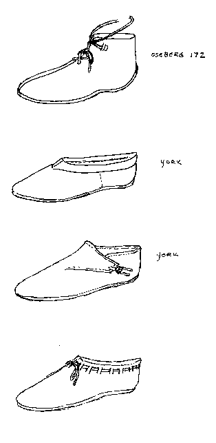
We also know that in this period, European shoes were being made as turnshoes (a shoe that has been made inside out to protect the seams when it is being worn, as opposed to modern, welted shoes, which are made right side out). Since modern, welted shoes were not invented until well after contact with Greenland was lost, we may safely assume that shoes were made inside out in Greenland.
As long as I am defining terms, a last is a wooden block. They usually are a stylized representation of a person�s foot. Shoes are frequently made using them as a form. Most often today these come in rights and lefts, corresponding to the right and left foot. Some, called �straights� or �upright lasts, have neither a right nor a left.
Within Greenland proper, we have the following materials, explained more fully in the following table:
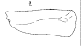
(After Rousell)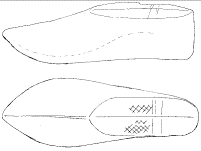
(After Rousell)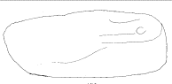
(After Rousell)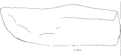
(After Rousell)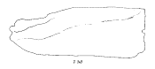
(After Rousell)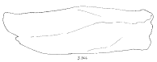
(After Rousell)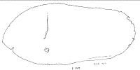
(After Rousell)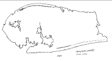
(After Rousell)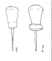
(After Rousell)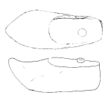
(After photographs courtesy of Berglund)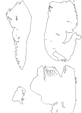
(After Veb�k)What then can we surmise from all this? Clearly, we don't have a lot of material. If we are careful, however, we can learn some things from the descriptions of these few scraps of leather and few chunks of wood, and draw some valid conclusions.
To start with, these materials fall into two specific geographical regions, and two general time periods. The Eastern versus Western settlement division is clear, but there is also a division between the earliest period of Settlement. The Narsaq materials from the Eastern Settlement and the period of the colonization around 1000; and virtually everything else coming from the Western Settlement near the end of its existence around 1350.
In the Greenland materials we have examples of what are sometimes called "straight lasts", or "upright lasts", and some right and left lasts. Contrary to popular belief, virtually all other lasts known from this period of the Middle Ages and later are either rights or lefts. Also, although there are very few lasts known from early Middle Ages, those all appear to have been either rights or lefts. The straight last is uncommon in European shoemaking after the Roman era until the late 1500s-early 1600s.
Now some in the past, myself included, have suggested that the lasts we find from the Middle Ages might not have been used for making shoes, that is assembling the uppers and the soles. This has been suggested because the medieval turnshoe doesn't actually require a last to be made. Instead, it's been suggested that possibly, early on, lasts may have just been some sort internal support, or even just used to stretch and shape the shoes after assembly.
The lasts we have from Greenland, and the few surviving shoe soles, suggest something completely different. The soles we find in Scandinavia, Britain, and the rest of Europe, generally reflect the lasts, and are accordingly cut as rights and lefts. For example, see a contemporaneous last from 1350s Stockholm (Although the sketch is not terribly
clear, you can see the area of the arch has been shaped).
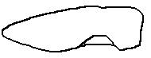
(After Dahlb�ck)In the Greenland materials, we can see that lasts appear to have been cut as straights. The reason for a straight last ultimately, is to save labor and materials; rather than making two lasts, only one needs to be made. It makes perfect sense to have a single last cut in a wood-poor environment like Greenland. Most of the wood that has survived appears to have come across the sea as driftwood; which is identifiable by chemical changes that occur in the wood at sea. However, if you were to be using the last as a darning egg, to merely support your work, you wouldn't need to make the lasts from a rare and hard to get material like wood. We know from other finds that the Greenlanders were more than happy to make everyday objects like lamps, belt buckles, weapons, and such out of bone and soapstone. These materials are also perfectly suited for darning-egg shoe shapers, yet all the lasts we have found so far were made from wood.
Also, the shape of a last upon which a shoe is made will be reflected the shape of the shoe. With a darning egg last this needn�t be the case. Shoes could still be cut out as rights and lefts, even if they were being assembled over a straight darning egg.
Curiously, the last from "Farm beneath the Sands" is unique in its profile, a straight last with an extremely high toe � far higher than a last�s toe should be under normal conditions. In fact, the toe is so high that nearly anything made on it should have the vamp (or front upper) portion of the shoe pulled completely out of shape simply by wearing it. It's been suggested that it was a toy, and this is possible. It may have had some orthopedic purpose. It�s also possible that it was carved in this fashion to save wood. Unfortunately, virtually anything that can be said about this last is speculative. At a later time, I intend on duplicating this last and seeing what can be made upon it, if anything wearable.
Because of the shapes of the lasts, and the shoe soles, we can say with some confidence, that by the time of the end of the Western Settlement around 1350, some shoes were being made on straight lasts. We can infer from this that, even in absence of such straight lasts on the mainland, the suggestion that lasts, straight or not, were being used in shoemaking in Scandinavia and the rest of Europe. Also that, by the 1350s, shoes with slightly pointed toes were being made in Greenland. However, because of the secondary nature of our information, these lasts can't tell us much more than that.
It is very difficult to make much determination about shoe �styles� because so little remains of the uppers materials to work from. That there is such little upper material is interesting in itself. The simplest suggestions for why this is have to do with construction material, and how readily it rots. The most straightforward possibilities are cloth, rawhide, or even just very badly tanned hide. The latter two strike me as the most plausible, considering the environment in Greenland, and the fact that normal tanning materials would have to have been shipped in from Iceland at the nearest. However, I am curious about the chemical properties of the bogs from which iron was sometimes extracted. I wonder if there is sufficient tannic acid that they might have done the sort of tanning that bogs from Sweden to Ireland have done. However, I suspect that any tanning methods, if tanning was done at all, were not as effective as tannage in Europe.
There is a curious support in this when we examine the only shoe upper portion that did survive in Greenland. It dates from the Landnam era; the time of initial colonization, around 1000. The decorative cutting on the upper does resemble that of some other Scandinavian footwear of the era. It is reasonable then to assume that the leather was tanned somewhere other than Greenland, and probably used some other, more effective, tannage process than that of those later uppers which have rotted away completely.
Photographs of the Landnam find do not reveal much information regarding the shape of the shoe�s sole. The sole shapes from the later examples are a little more informative. They appear to show considerable delamination, where the leather has separated into different layers, which supports the suggestion of poor tannage.
This leaves us with a number of questions that this material does not readily answer for us.
The first question is �what materials were used?� We can reasonably assume that these might have been made from bovine leather, since it was commonly used in Scandinavian footwear, and we know that cattle were present in small numbers in Greenland. But other possibilities also exist (sheep, seal, walrus, and so on). [Also, since it was not unknown for leather in British and European shoes to sometimes contain recycled leather from other sources, some leather recycling may have been going on in Greenland. And if they were pushing the leather supply as far as possible through recylcing, there'd be less of a chance for the shoes to survive to make it into the archaeological record. This might also help explain why there weren't any shoes in the Herjolfsnes graves, although from the literature it appears that 'Hel-shoes' were a Norse cultural element].
The second question is �what sort of thread was used?� In Europe, at this time, linen thread was generally the normal material for stitching. The thread was cered, or �waxed�, with a pitch and resin substance that attached a pig's bristle to the thread. The bristle was then used to pull the thread through the sewing in the fashion of a needle. Other materials used for thread in earlier Scandinavian shoemaking were sinew and wool. We know from the Sagas that at some point, a needle was used for something. It's possible that bristled linen thread with pitch and resin was used in Greenland, but if so, where did these things come from? All of these materials would have to have been imported. The shoe soles only tell us that the pitch of the stitching, the numbers of stitches per inch, appear to be about 4-5 per inch, which is consistent with examples from Britain and Europe, and may suggest that stitching materials and techniques could have been similar. [N.B. I should note that another paper given at the same conference the one you are reading was given at, to wit, Nordtorp-Madson, M. A. (Shelly), 'What's the "Madder" with This Picture? The Greenland Norse Garments and Some Difficulties in Relying on Preserved Artifacts', and some personal discussion afterward, based on the number of flax seeds found in Greenland, it is likely that linen thread, at least, was used early on in the colony's existence]
The third question is �what was used to last the leather�, that is, what was used to attach the leather to the last, if indeed the shoes were made on these lasts? Under normal circumstances this is done with lasting tacks made from metal. In Greenland, metal was at a premium, so much so that simple, common items like axe heads and belt buckles were made from bone. There is even a reference in the Icelandic Annals of Greenlander ships being notable for having been lashed together with walrus hide strips, rather than being riveted together with iron. The use of lasts is evidenced by holes in the soles of the shoes and in the bottom of the lasts. The shoe sole photos are unrevealing, and the only Greenland last I have seen a picture of the bottom of is the "Farm beneath the sands" last, and the photographs I have show no tack holes.
The scarcity of iron brings us back to the question of needles or bristles, or something else? If the shoes were stitched with sinew, this becomes less of a problem, as sinew is stiff enough to be used as its own needle.
Then we have the truly obscure question of were the metal awls found at Sandnes, or even the wooden awls from Narsaq, used to make shoes? Straight awls were used in the Middle Ages to make shoes; we know this from the pictorial and archaeological evidence from Europe. Having used reproductions of the straight awls from Sandnes, I can state that they do a dandy job. It's even interesting that one of the Sandnes awls has a form of the traditional "capstan" feature found on modern shoemaker's awls, which is a fairly sophisticated development in shoemaking tools. This is used to wrap the thread around when pulling it tight. On the other hand, on the medieval awls we have, this feature is less obvious, where it exists at all. Is this feature then what it appears to be? Is it more noticeable in Greenland for a reason, or is it a coincidental feature?
Finally, �what were they wearing in mainland Scandinavia, and how does that compare to what we�ve found in Greenland?� We can't say how it compares since the only upper we have is from the early period, and was likely made elsewhere. The later period lasts tell us only that the toe was slightly pointed, and the heels were rounded These are features that do compare with Scandinavian shoes from the period, but that's all.
In conclusion, it's apparent that these finds tell us both a great deal and very little about medieval shoemaking in general. They tell us that shoemaking in Greenland was fairly unique compared to other places in the Middle Ages. The use of straight Lasts in conjunction with the straight soles presents an interesting perspective on a question of Last usage elsewhere. However, the questions of Lasting methods, needles versus bristles, tannage, material availability, awl shape, and so on, still remain unclear at this time.